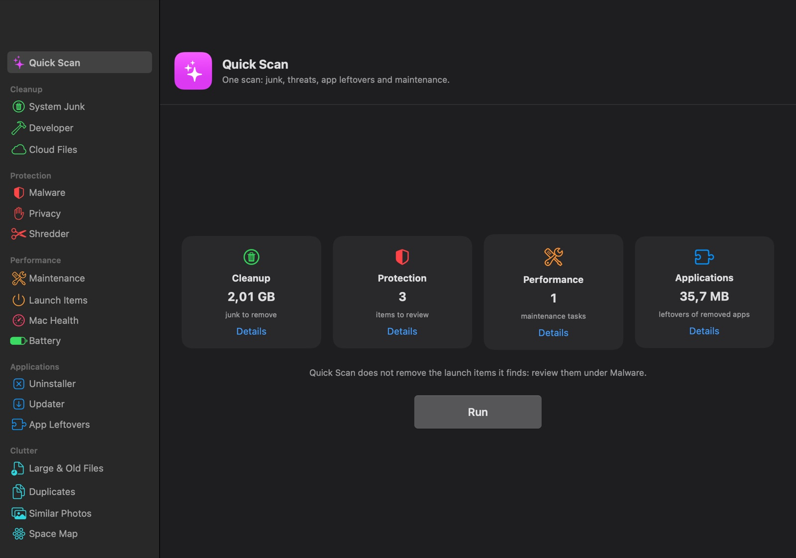

Guide · Comparison
Free, open-source CleanMyMac alternatives
CleanMyMac is a polished paid app. If you would rather not pay a subscription — or you want to read exactly what a cleaner deletes — there are good free, open-source options on GitHub. Here is what each one is for.
Disclosure: this site is made by the MyOpenCleaner project, so we list it first. Facts about other projects come from their GitHub repositories as of November 2026; licenses and features change, so check each repository before you rely on it.
At a glance
| Project | Type | License | Best for |
|---|---|---|---|
| MyOpenCleaner | Native SwiftUI app | MIT | All-in-one cleaning, developer Macs |
| PureMac | Native SwiftUI app | MIT | Simple, lightweight cleaning |
| Mac Sai | Native SwiftUI app | BSD-3-Clause | A native app with a permissive license |
| purge-app | Native Swift app | MIT | Freeing disk space |
| Kudu | Electron app | MIT | Cleaning rules you can read as JSON |
| Pearcleaner | Native app uninstaller | Source-available (fair-code) | Removing apps with their leftovers |
| Mole | Command-line tool | GPL-3.0 | Terminal users and scripts |
1. MyOpenCleaner
MyOpenCleaner aims to cover most of what a paid all-in-one cleaner does, in one native app with no account, ads or telemetry:
- Quick Scan, System Junk, Space Map, and Large & Old, duplicate and similar-photo finders.
- An uninstaller that finds app leftovers, plus updates for Sparkle apps.
- Login and background items, a malware check, privacy cleanup, maintenance tasks, a shredder, and battery health.
- A Developer page for Xcode, simulators, Docker, package caches, IDE caches and AI models.
Its focus is safety: everything goes to the Trash with a full Undo, a guard blocks system and media-library paths, and about 250 automated tests cover what it may delete.
Trade-off: there is no signed, notarized download yet. You build it from source with one command (./build.sh --install) or allow the ad-hoc signed app once.

2. PureMac
PureMac is a lightweight, MIT-licensed SwiftUI cleaner focused on junk and caches. It is a good choice if you want something small and simple. (Some of MyOpenCleaner's developer-cleanup ideas were inspired by it.)
3. Mac Sai
Mac Sai is a native Swift and SwiftUI cleaner under the permissive BSD-3-Clause license, actively developed in 2026. Worth a look if you want a native app and a license that allows reuse.
4. purge-app
purge-app is an MIT-licensed Swift app for freeing disk space on a Mac, also under active development.
5. Kudu
Kudu is an MIT-licensed cleaner built with Electron and TypeScript. Its cleaning rules are plain JSON files, which makes it easy to see — and change — what it targets. Being Electron, it is larger than the native apps.
6. Pearcleaner — for uninstalling
Pearcleaner is a popular native app uninstaller: drop an app on it and it finds the preferences, caches and support files the app left behind. Its license is source-available “fair-code” rather than a standard open-source license — free to use, with limits on commercial reuse. If uninstalling is all you need, it is excellent.
7. Mole — for the terminal
Mole is a GPL-3.0 command-line cleaner. It cleans user and app caches, developer tool caches, project build folders and more from Terminal, which suits people who prefer scripts over a GUI.
How to choose
- You want one app for everything, or you are a developer → MyOpenCleaner.
- You want something small and simple → PureMac, Mac Sai or purge-app.
- You only need to remove apps cleanly → Pearcleaner (or MyOpenCleaner's Uninstaller).
- You live in Terminal → Mole.
Whichever you pick, prefer a cleaner that shows you the list before it removes anything, and that moves files to the Trash rather than deleting them immediately.
FAQ
Is there a free alternative to CleanMyMac?
Yes. Several open-source Mac cleaners are free, including MyOpenCleaner, PureMac, Mac Sai and purge-app. For removing apps with their leftovers, Pearcleaner is popular; for the command line, Mole.
Are open-source Mac cleaners safe?
You can read exactly what an open-source cleaner deletes, which is its main advantage. Still prefer tools that show a list before removing anything and move files to the Trash instead of deleting them outright.
Do I need a Mac cleaner at all?
macOS manages most caches itself, so many people never need one. Cleaners help most on small disks and on developer Macs, where Xcode, Docker, package caches and AI models can take tens of gigabytes. See how to clear System Data for the manual route.
Try MyOpenCleaner
Free, MIT-licensed, no account and no telemetry. Every clean can be undone.
Get MyOpenCleaner